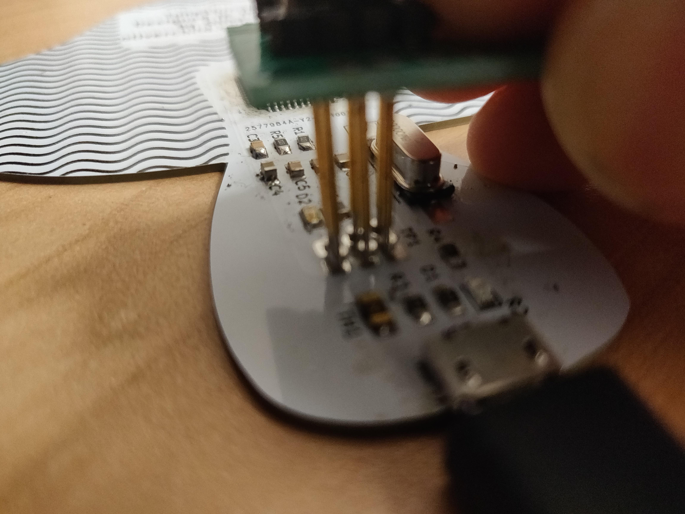

TuneShroom
So I made another PCB and it’s awesome! It makes noises and looks like a mushroom. I used svg2shenzhen, KiCad, and Inkscape. It’s just a USB MIDI controller wih lots of capacitive touch pads. Checkout the github repo for code and gerbers.
The Prototype
I started off by making a proof of concept out of the worlds greatest material, CARDBOARD! I used aluminium foil tape to make contacts and threaded rainbow cable through the back to an “Arduino” Pro Micro. This was quick to build but I felt a little limited by the number of pins available on the Pro Micro and through the arduino layer so decided to explore the world of bare metal programming!
The Board
I ordered the PCBs from JLCPCB, They were super cheap and came within a week to my university halls. Unfortunately the same can’t be said for the components I ordered from TaoBao. They got lost somewhere between Shenzhen and Hong Kong. Fortunately, I also got my Chinese visa last week, So it was a perfect opportunity to go and visit the electronics markets at HQB and spend more money than I needed to on all sorts of exciting electronics! Anyway, I managed to source all the parts and soldered them up at Dimsum Labs in Hong Kong.
The Code
As mentioned above, I started off in the comfort of the Arduino environment but felt as though I was pushing the boundaries of what it should be used for. I decided it was time to graduate to real bare metal programming. I used the LUFA library to help me with all the USB stuff. Apart from working out all the DDRs, PINs and the PORTs it was fairly painless, and I look forward to working on some other more advanced embedded projects.
Programming
I built myself a little programmer with some pogo pins I picked up at HQB. It’s a little dodgy but it seems to do the trick. I would love to try out building some real programming jigs though. Maybe a future project…

What’s Next?
I’m not sure really how to progress with this project. It was fun, but I feel making MIDI controllers is cheating a bit because it isn’t really that difficult. I really want to have a go at making some real synths. I’ve got a list of things to improve if there were to be a v2. More LEDs and maybe easier to use.